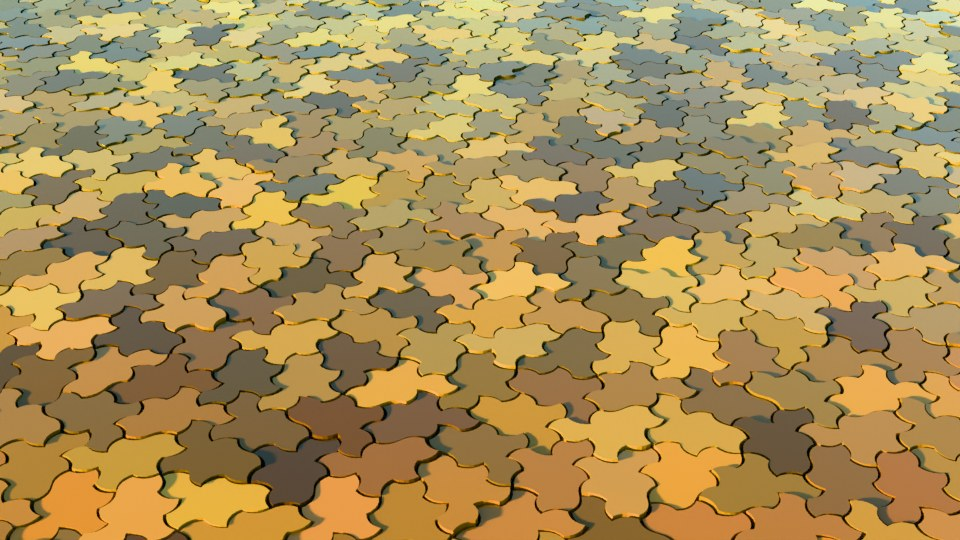

Design, art, and architecture
Repeat-free ornamental surfaces, facades, textiles, and real-world tiling instructions.
Surfaces that never wallpaper
Ornament has always negotiated between order and monotony. Historic zellige, azulejo, and parquet crafts solved it with hand variation; modern manufacturing lost that solution the moment patterns became repeatable. The aperiodic monotile restores it structurally: one manufactured shape, infinite non-repeating arrangements, provable by theorem rather than promised by a craftsman.[2][3]

Because the tiling is deterministic, a designer can sign off on the exact layout before fabrication — every tile position is known, exportable, and reproducible. And because Tile(1,1) needs no reflected copies, production tooling stays single-sided: one mold, one die, one glaze line.[2]

Tiling a real surface: practical instructions
Physical monotile installations are already common among mathematicians, makers, and a growing number of tile artisans. The working recipe, distilled from the research community's own guides:
- Choose the Spectre, not the Hat, for physical work. Hat tilings require reflected copies — for glazed or finished tiles that means two distinct products. The Spectre tiles with one handedness only.[2]
- Use curved or keyed edges. The straight-edged Tile(1,1) can be assembled into a periodic pattern by a well-meaning installer. Curved Spectre edges physically refuse periodic and reflected placements — the geometry enforces correctness.[2]
- Get the outline from a trusted source. Kaplan's project page publishes SVG outlines; community repositories provide OpenSCAD, STL, and DXF for 3D printing, laser cutting, and CNC (see the bibliography tools list). Parametric models let you add orientation marks so pieces cannot be laid face-down.
- Assemble by supertile. Working tile-by-tile invites dead ends. Pre-assemble the 8-to-9-tile clusters from the substitution system, then place clusters — the same hierarchy the mathematics uses. See Substitution tiling.
- Or skip layout entirely: generate the exact patch for your wall's dimensions with a clipping mask at aperiodicgenerator.com, and deliver the installer a numbered plan where every tile has an ID and position.
For hybrid designs, research on interfaces between aperiodic and periodic tilings shows how a Spectre field can hand off cleanly to a conventional grid at a boundary — useful where a feature wall meets standard tile.[18]
Applications
- Feature walls, floors, and facades with provable non-repetition — including built limestone terraces assembled from hundreds of waterjet-cut Spectre pieces (see bibliography)
- Three-dimensional topological interlocking assemblies from identical aperiodic blocks[50]
- Generative sculpture, ornamental screens, and visual illusions
- Textiles, wallpaper, packaging, embossing, and engraving with no repeat unit
- Lightweight shells, tensile structures, and spatial studies for built environments
See also
Computer graphics, Materials and fabrication
Categories: Applications